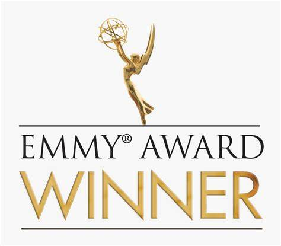

Avaliações: 8,7/10 IMDB  |
94% Rotten Tomatoes
|
94% Rotten Tomatoes
Ao todo, This Is Us conta com 240 nomeações para premiações e 59 vitórias. 
Sinópse:
Todo mundo tem uma família. E toda família tem uma história. This Is Us narra a família Pearson ao longo das décadas: de Jack (Milo Ventimiglia) e Rebecca (Mandy Moore) como jovens pais na década de 1980 a seus filhos de 37 anos, Kevin (Justin Hartley), Kate (Chrissy Metz) e Randall (Sterling K. Brown) em busca de amor e realização nos dias atuais. Esse drama fundamentado e afirmador da vida revela como os menores eventos em nossas vidas afetam quem nos tornamos, e como as conexões que compartilhamos uns com os outros podem transcender o tempo, a distância e até a morte. Um show inteligente e moderno que irá recebê-lo em uma família que você sente que conhece há anos.
A trama é contada em 6 temporadas, em diferentes linhas do tempo, que são o passado, o presente e o futuro dos três personagens principais: Randall, Kate e Kevin. A vida deles é narrada com forte ligação com seus pais, sua criação e todos os seus sucessos e fracassos.
This Is Us surpreende, a cada novo episódio, pela simplicidade e pela excelente narrativa do cotidiano familiar dos Pearson, em que qualquer pessoa consegue se identificar com pelo menos um drama, uma felicidade, uma conquista, uma derrota, enfim, os muitos aspectos familiares contado nos 50 minutos médios de cada episódio.
Introduzindo rapidamente a trama: um casal pouco provável de terminar junto, Rebecca e Jack Pearson se conhecem de maneira casual, demonstrando que as relações amorosas podem ser surpreendentes. Eles não seguem uma história pronta, e acabam formando uma linda família, com seus três filhos gêmeos, Randall, Kate e Kevin.

Jack é um homem que, acima de tudo, ama ser pai. Desde os primeiros episódios, é possível ver o poder e a integridade dele, que teve uma infância e adolescência difíceis, com um péssimo exemplo de pai dentro de casa, mas que acaba se tornando o herói da família Pearson. Toda a trajetória desse personagem nos ensina sobre resiliência, paciência, o poder da mágoa e do rancor, além de nos fazer pensar sobre a grande influência que é ter um pai presente.

Rebecca é aquela mãe carinhosa e atenciosa, mas que abriu mão de alguns desejos antigos para criar uma boa família, sem nunca deixar de ser o pilar dos três descendentes, ensinando-nos sobre altruísmo e resiliência, de um jeito bem diferente do que nos mostra a história de Jack.

Kate herdou o amor da mãe pela música. Embora tivesse um relacionamento excelente com o pai, a dinâmica com a mãe era mais complicada. Seus problemas de autoestima quando jovem a levaram a sofrer transtornos alimentares ao longo da vida. Após uma longa depressão aos 30 anos, Kate consegue voltar aos trilhos graças à ajuda de seu marido, Toby, que a incentiva a voltar a cantar e com quem ela embarca na maternidade. Mas nem tudo é perfeito: as inseguranças de Kate devido à obesidade, o relacionamento complexo que teve com a mãe quando mais jovem e o fantasma da depressão que sempre assombra Toby dificultaram o início de sua jornada como novos pais.

Kevin é o irmão gêmeo de Kate e o mais rebelde dos Pearsons. Na juventude, era um excelente jogador de futebol americano, mas sua carreira esportiva e seu sonho de se tornar um jogador profissional foram arruinados por uma lesão na perna. Foi assim que, anos depois, decidiu estudar atuação para se tornar um astro de cinema. E, mesmo tendo o sucesso necessário para chegar à fama, com o tempo sentiu um vazio e a necessidade de se arriscar em experimentações na área da atuação. Embora dentro da família fosse considerado imaturo por sua falta de compromisso e por suas decisões impulsivas, com a idade Kevin aprendeu a encontrar seu propósito e a consertar o passado, enfrentando seus problemas de vício e seus relacionamentos amorosos.

Randall foi adotado por Jack e Rebecca após ser abandonado com poucos dias de vida em um batalhão de bombeiros. É casado com Beth (Susan Watson), que conheceu na faculdade e com quem tem três filhas: Tess (Eris Baker), Annie (Faithe Herman) e Deja (Lyric Ross). Sua principal característica é ser marido e pai amoroso, sempre atento ao bem-estar de sua família. Para alguns, Randall era o “garoto perfeito” da família, pois sempre foi intelectualmente talentoso e muito dedicado ao estudo, mas essa busca por excelência foi a causa de muitos episódios de ataques de estresse e ansiedade.
Os filhos são os mais diferentes possíveis: tem o que ama esportes(Kevin), a que tem afinidade com as artes(Kate) e o nerd(Randall), superestudioso. E a história central é sobre eles, as famílias que criam, sempre mostrando a influência que a criação e todo o enredo da infância e as reviravoltas da adolescência e da vida adulta tiveram sobre quem são hoje. Toda a trajetória deles – individual e coletiva – traz ao espectador ensinamentos sobre sonhos, traumas, perdas, ganhos e, acima de tudo, valor da família.
Depois de algumas temporadas, não é só sobre o presente e o passado da família Pearson. Também somos surpreendidos com flashes do futuro – alguns bem distantes, que demoram a ser trabalhados, e outros mais palpáveis, que atiçam a curiosidade do telespectador e ajudam a tornar a série tão interessante e cheia de emoção.
O que torna This Is Us interessante é a delicadeza com a qual cada assunto é tratado, sempre mesclando os problemas do presente com flashbacks que trazem pontos importantes para entender o que está acontecendo. Por conta disso, a série tem um elenco vasto, que mostra os filhos em diversas fases da vida, e sempre surpreende ao fazer tudo isso com muita veracidade: é difícil não ver Randall, Kate e Kevin, mesmo quando os atores mudam com o passar dos anos.
Fica aqui o conselho de uma ótima série para você acompanhar e se dar uma chance de se envolver de verdade. Problemas cotidianos, como estresse no trabalho, desavenças familiares, pequenas e grandes conquistas profissionais, dificuldades com o envelhecimento e tantos outros temas, são tratados tão delicadamente que, às vezes, você só percebe as conexões de cada ação em episódios bem mais à frente. E, quando você se dá conta, está verdadeiramente aprendendo coisas novas, só assistindo à TV.
Um dos episódios mais aclamados pelo público e crítica foi durante a 2ª temporada, o qual passou na televisão após o Super Bowl LII.
Foi no ano de 2018, após a vitória do Eagles por 41 x 33 Patriots, com audiênciado episódio estimada de 27 milhões de pessoas nos EUA, o episódio tem avaliação 9.7 no IMDB e foi considerado na época o programa mais assistido após o Super Bowl desde 2012.